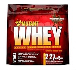
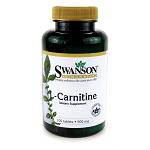
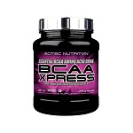
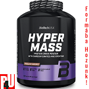

Legális szerek a testépítéshez
Mit is nevezünk legális szernek?
Ezek olyan porok, vitaminok , tápanyagok, melyeket a törvény megszegése nélkül fogyaszthatunk. Fontos, hogy ezek a szerek nem helyettesítik az étkezést, hanem ezek kizárólagosan csak kiegészítik az étrendünket. Azaz e szerek segítségével pontosan,és egyszerüen bevihetjük a megfelelő mennyiségű tápanyagaokat, de mint ahogy az imént említettem ezekkel csak kiegészítjük az étkezéseinket, és nem ezekből áll az étkezés.
Röviden ide tartoznak azok a szerek, amellyek elősegítik a szervezetünk egészséges működését.
Nézzünk meg néhány fajtát:
-




Mi a feladata egyes táplálékkiegészítőnek?
- fehérje porok
- A vázizomzat alapvető építőkövei,emellett a feladata az enzimek termelése, izomzat-, szerveink-, -szöveteink felépítése.
- vitaminok
- A vitaminok az immunrendszer erősségéért felelősek.
- aminósavak
- Főként szénből, hidrogénből, oxigénből és nitrogénből épülnek fel. Vízzé és fehérjékké kapcsolódnak össze.
- tömegnövelő szerek
- Segít a száraz izomtömeg felszedésében, természetes módon.
Sokan gondolhatják, hogy táplálékkiegészítő szereket csak, kizárólagosan sportolók, vagy akár azt is gondolhatják, hogy csak testépítők használják. Ezek természetesen téves eszmék, hisz például a vitaminok szedését az orvosok is javasolják betegség vagy vírushelyzet idején is.
Legális szerek a sportos élethez
| Edzés előtti termékek | Tesztoszteronszint növelők | ALC (ACETYL-L-CARNITNIE) |
|---|---|---|
| Ami-NO Xprexx | Tribulus 3000 | TGH |
| Hot Blood 3.0 | Tribooster | DAA pro |
| Superhero | Black Test |